“Si pagas un tour, es para disfrutarlo, sin que te estén apurando.”
Empecé como guía en el Acatenango. Nos mandaban a subir con grupos de 35, 40 y hasta 60 personas, con muy pocos guías. A los que caminaban despacio había que apurarlos. Los más rápidos se desesperaban.
Por eso nos independizamos: una agencia local en la entrada principal del volcán, con guías de la zona y grupos pequeños, para que la gente disfrute de verdad el Acatenango.
Algunas agencias te prometen de todo y, a la hora del tour, es otra cosa. Con nosotros, lo que te decimos que te vamos a dar es lo que te damos. Si necesitas algo, escríbeme. Aquí estoy.
AlexanderLa Soledad, entrada principal al Acatenango
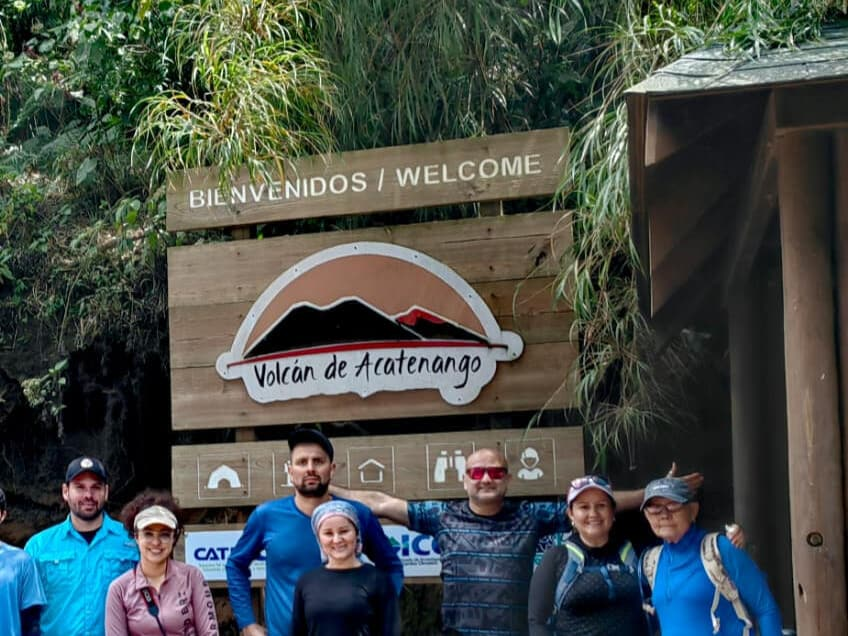
El punto de partida: la entrada principal, en La Soledad.
Nuestros guías son de la zona. Hablan sobre todo español y un poco de inglés.
Conocen esta montaña, son amables, de buen corazón y muy divertidos, y se aseguran de que todos se vayan contentos.
De grupos de 35–60 con pocos guías, a 2–8personas por guía
¿Son nueve? Van dos guías.
Así guiaba Alexander antes: grupos de 35 a 60, pocos guías
Así camina Solex: de 2 a 8 personas con un guía local, al ritmo de tu grupo
Columna izquierda: lo que Alexander vio en sus años como guía de agencias grandes. No todas las agencias trabajan así.
Importa dónde duermes
Acampamos del lado derecho. El Fuego queda justo enfrente.
Muchos grupos que salen de Antigua acampan del lado izquierdo, mirando hacia Antigua y la Ciudad de Guatemala, con el Fuego a un lado. Desde ahí se ven las erupciones grandes, pero se pueden perder las pequeñas, porque la mayor parte de la lava baja por el lado que nosotros tenemos de frente.
“Otras agencias no tienen esa vista desde sus campamentos. Por eso ofrecen una caminata aparte para ver el atardecer.”
Desde nuestro campamento: el Fuego de frente, erupciones pequeñas y grandes, y la cadena de volcanes hacia el Lago de Atitlán en los días despejados.Desde el lado izquierdo: vista hacia Antigua y la Ciudad de Guatemala, con el Fuego a un lado.
Es un esquema, no un mapa. Las vistas dependen de que el cielo esté despejado.
Una vista, tres espectáculos. Desde tu cabaña.
“Tenemos el Fuego justo enfrente.”Tarde.Con el cielo despejado, lo tienes ahí toda la tarde.
“Lo vemos desde nuestros campamentos.”Atardecer.Desde el campamento, con el cielo despejado.
Con un chocolate caliente en la mano.De noche.Erupciones pequeñas y grandes en las noches despejadas. La actividad del Fuego cambia cada día: unas noches hay más erupciones que otras.
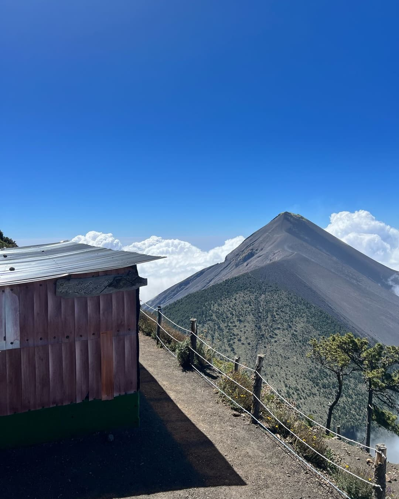
“Tenemos el Fuego justo enfrente.” Con el cielo despejado, lo tienes ahí toda la tarde.
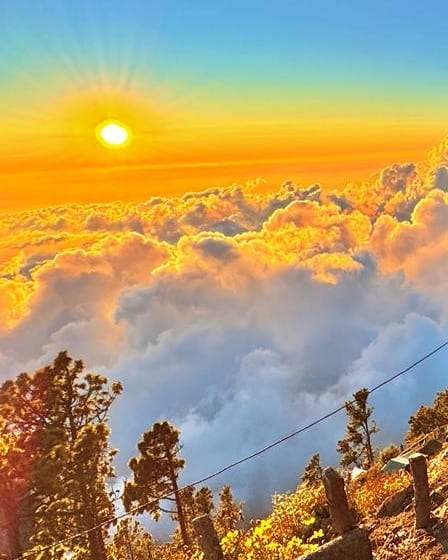
“Lo vemos desde nuestros campamentos.” Desde el campamento, con el cielo despejado.
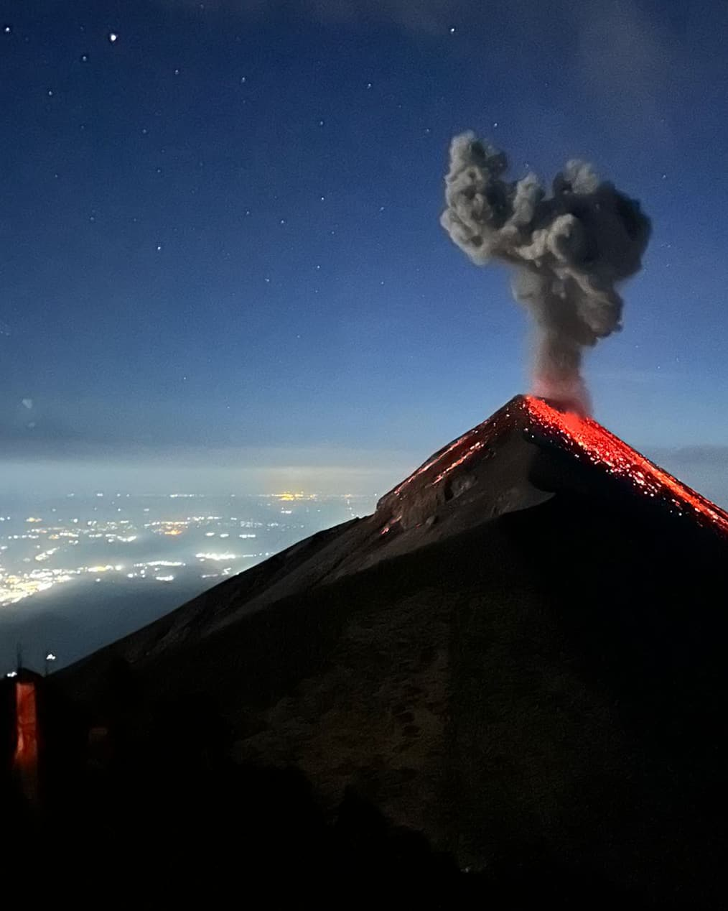
Erupciones pequeñas y grandes en las noches despejadas. La actividad del Fuego cambia cada día: unas noches hay más erupciones que otras.
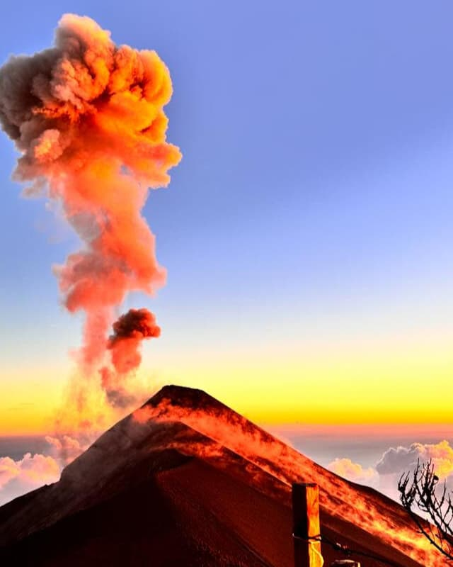
El Fuego al amanecer.
Extra opcional
¿Quieres acercarte más al Fuego?
Unas 4 h2 h de ida · 30 min arriba · 2 h de regreso
+Q300por persona
En el campamentose decide y se paga
Desde el campamento hacia el volcán activo y de vuelta al mismo campamento a dormir. Tu guía te aconsejará, por su experiencia y por cómo lee el clima de la montaña, si vale la pena ir hacia la cima del Fuego. ¡Con un poco de suerte el cielo estará despejado y la vista de las erupciones de lava será espectacular!
Desde nuestra plataforma privada, con bancas y sillas, ves el Fuego de frente. En los días despejados también se ve la cadena de volcanes hacia el Lago de Atitlán.
Nuestro tour más popular
La caminata de 2 días al Acatenango
1 noche en una cabaña frente al Fuego · amanecer en la cima, a 3,976 m
Q750por persona · ≈ US$100
Qué incluye
Transporte desde Antigua, ida y vueltaTe recogemos en Café Condesa (Parque Central) o en Café La Parada (Parque La Merced). Al regreso te dejamos en el mismo lugar.
Un guía localDe 2 a 8 personas por guía. ¿Son nueve? Van dos guías.
Entrada al volcán Acatenango
Una noche en una cabaña frente al FuegoEl colchón, la bolsa de dormir y la almohada ya están allá arriba. Las cabañas son compartidas, para seis personas.
4 tiempos de comidaDesayuno, almuerzo y cena el día 1, y desayuno el día 2.
Chocolate caliente en la noche, café o té en la mañana
Subida a la cima al amanecerCerca de 1 hora del campamento a la cima, a 3,976 m.
Guardamos tu equipaje en La SoledadTu equipaje queda guardado y seguro en la casa de Alexander mientras caminas. Lleva contigo tu pasaporte, tu dinero y tu teléfono.
No incluido · a solicitud
Porteador para hasta 13 kg: Q250 de subida · Q250 de bajada, se paga el mismo día
Alquila chaqueta, mochila, linterna, bastones o zapatos · precios por WhatsApp
Recogida a las 8:00 a. m. (desde las 6:30 a. m., a solicitud). Confirma la hora y el lugar exactos con Alexander por WhatsApp.
Lo que no te prometemos
Te lo decimos claro, antes de que reserves.
Cielo despejado y erupciones. Las vistas dependen de las nubes y del volcán. Prometemos el lugar, no el espectáculo.
Inglés fluido. Nuestros guías hablan sobre todo español y un poco de inglés. Eso sí: son amables, de buen corazón, muy divertidos y se aseguran de que todos se vayan contentos.
Una cabaña privada. Las cabañas son compartidas, para seis personas. A solicitud, y si hay poca gente en el campamento, puedes tener una cabaña solo para ti, tu pareja o tu grupo pequeño; Alexander te lo confirma cuando se acerque la fecha.
Lo que llevas tú
4 litros de agua por persona.
Ropa de abrigo extra, gorro y guantes. Las noches en el campamento son frías, por lo general entre −2 °C y +5 °C.
Una mochila pequeña. ¿No tienes equipo? Te lo alquilamos, a solicitud.
Una linterna frontal y buenos zapatos. O alquílalos en casa de Alexander.
Tu pasaporte. Lo revisan en la entrada del parque.
Efectivo. El pago es en efectivo: fácil y sin comisiones de tarjeta.
“La cabaña del campamento base tiene probablemente la mejor vista del volcán de Fuego.”
Original en inglés
“The hut at base camp has probably the best view of volcán de fuego.”
Jeremy H. Reseña de Google · julio de 2026
5 de 5 estrellas.
“Muy felices de haber elegido Solex para esta experiencia increíble. Grupos pequeños a muy buen precio.”
Original en inglés
“So happy we chose Solex for this incredible experience. Small groups for a really good price.”
Meghan J. Reseña de Google · mayo de 2026
5 de 5 estrellas.
“La comida estaba riquísima y las cabañas eran cómodas, con una vista increíble del volcán… ¡de las mejores, creo!”
Original en inglés
“The food was absolutely delicious and the cabins were comfortable with an amazing view of the volcano… one of the best I think!”
Rachel C. Reseña de Google · febrero de 2026
5 de 5 estrellas.
“…él nunca nos apresuró ni nos dejó atrás.”
Tania P. Reseña de Google · marzo de 2025
5 de 5 estrellas.
“Alex nos ayudó muchísimo cuando quisimos cambiar de día a última hora, y fue muy flexible.”
Original en inglés
“Alex was super helpful when we wanted to change days at last minute and he was really flexible.”
Ricky S. Reseña de Google · mayo de 2026
5 de 5 estrellas.
“Es un negocio local que me alegra haber apoyado, y sin duda volvería a reservar con ellos.”
Original en inglés
“This is a local run business that I am glad I supported and I would 100% book with them again.”
Julian H. Reseña de Google · julio de 2026
Desliza para ver más
100% local y familiar
Hecho en La Soledad.Con gente de aquí.
Solex es una pequeña empresa familiar de La Soledad, la aldea al pie del Acatenango. Alexander lleva más de 20 años guiando en el Acatenango. En 2019 fundó Solex.
Nuestros guías son guías locales con experiencia; muchos trabajaron años para las agencias grandes antes de decidir hacerlo distinto: grupos pequeños y cercanos, calidad de verdad y cada viaje pensado para ti.
100% local. La idea no es que una sola persona se haga rica: lo que pagas se queda en La Soledad, con guías y porteadores de la aldea y con las familias al pie del volcán.
“Da gusto pagarle a una familia local y a un guía local en lugar de a una agencia grande. ¡Muy recomendado!”
Original en inglés
“It’s nice to be paying a local family and local guide rather than a big agency. Highly recommended!”
Así son los dos días
De un café en Antigua a la cima al amanecer.
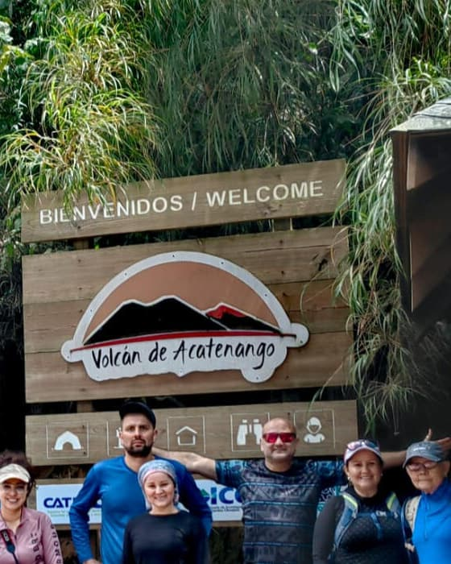
El inicio del sendero en La Soledad
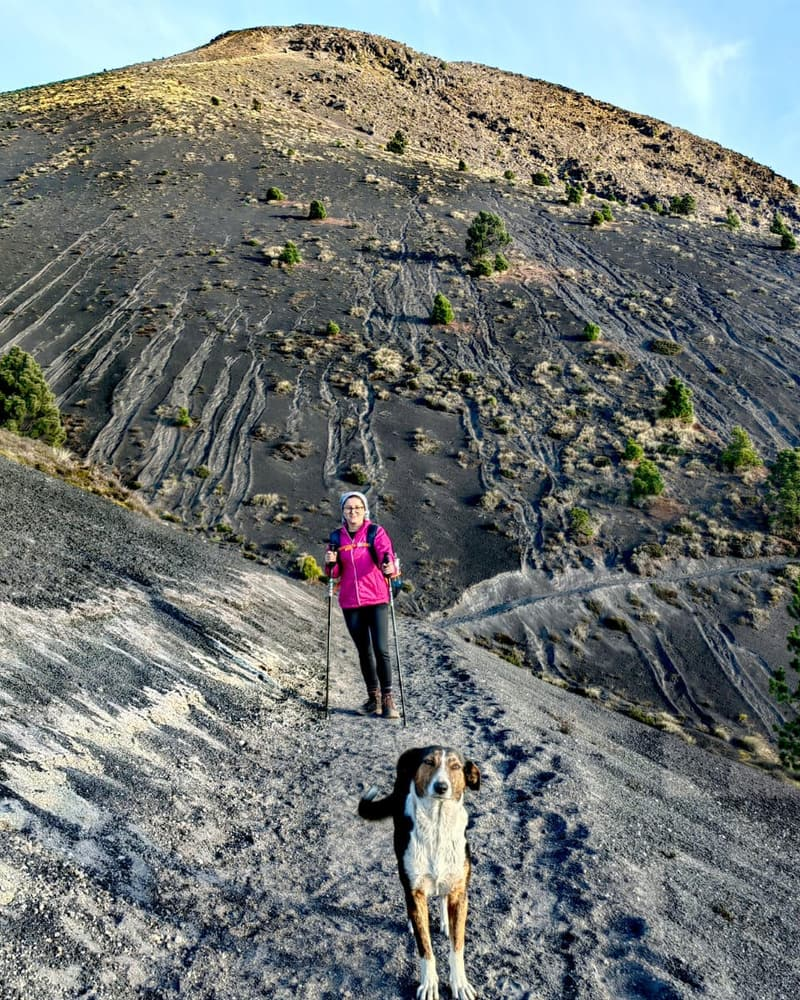
Los bastones ayudan en la arena volcánica sueltaLa fila de cabañas de nuestro campamentoAtardecer sobre las nubes
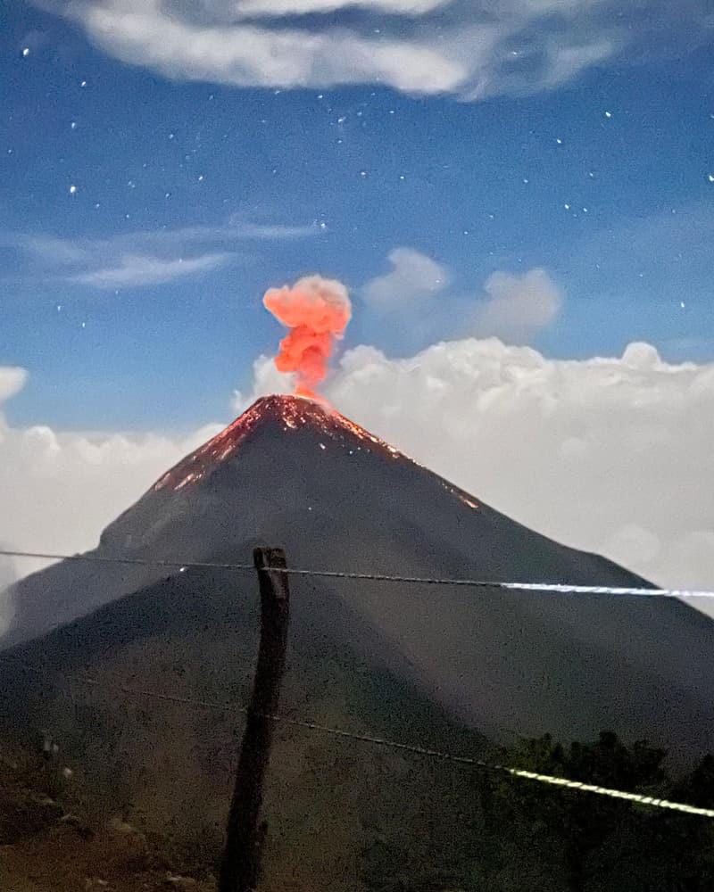
El Fuego en una noche despejada.
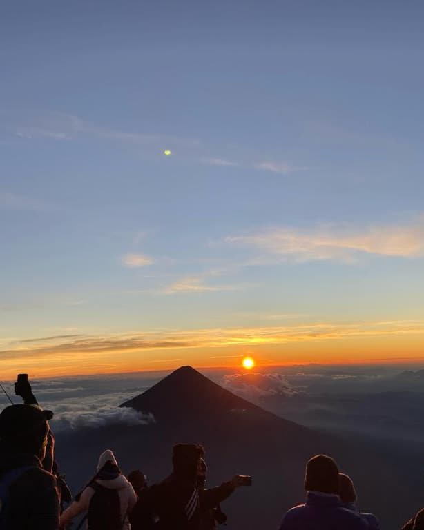
El amanecer desde la cima
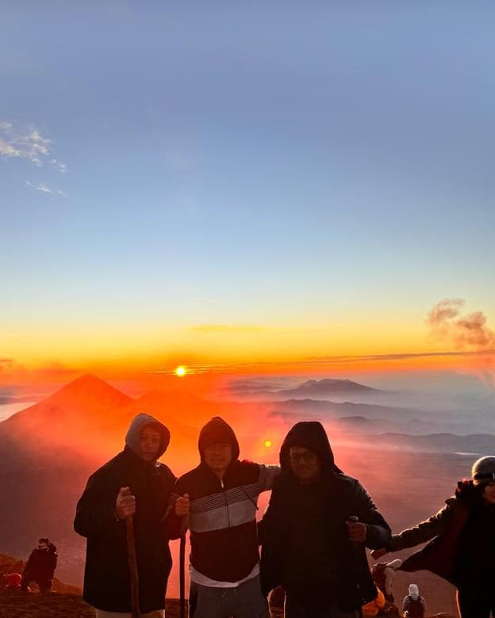
Amanecer, día 2
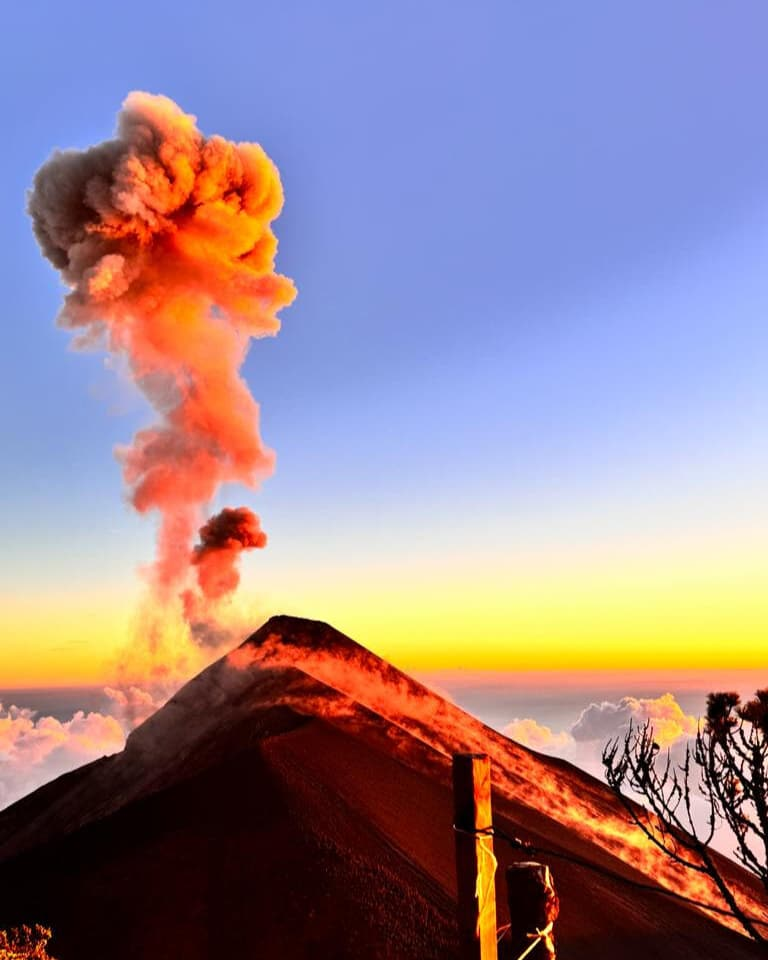
El Fuego con la luz de la mañana
Día 1
8:00 a. m. · Antigua
Te recogemos en el café
Café Condesa (Parque Central) o Café La Parada (Parque La Merced); desde las 6:30 a. m., a solicitud. Luego, como una hora en carro hasta La Soledad. Trae tu maleta: viaja con nosotros.
9:00 a. m. · La Soledad
Alexander te abre su puerta
Baño, indicaciones, alquiler de equipo si lo necesitas, y conoces a tu guía. Tu equipaje queda guardado y seguro en la casa de Alexander mientras caminas.
Mañana
La subida
Al ritmo de tu grupo. El almuerzo está incluido. Aquí nadie te apura.
Tarde
Campamento, lado derecho
Tu cabaña está lista: colchón, bolsa de dormir, almohada. El Fuego queda justo enfrente. Es hora de descansar y disfrutar del día y del paisaje —en tu cabaña o al aire libre, justo frente al volcán de Fuego en plena actividad— y, si el cielo está despejado, de ver sus increíbles erupciones. Desde nuestra plataforma privada, con bancas y sillas, te relajas frente a la mejor vista.
Atardecer
Atardecer desde el campamento
No hace falta otra caminata. La vista desde nuestro campamento ya es impresionante. Si quieres y te sientes con energía, la caminata opcional al Fuego te lleva tan cerca de la cima del volcán activo como lo permitan las condiciones (siempre dentro de los límites legales y de seguridad).
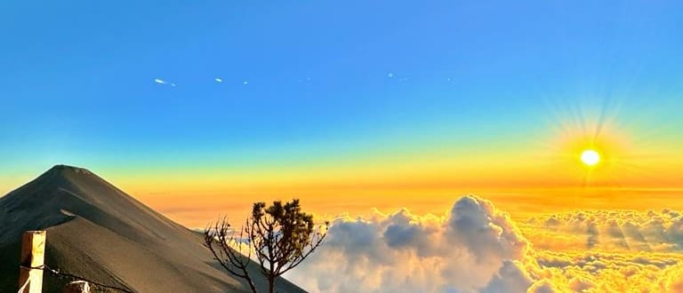
Atardecer sobre las nubes, con el Fuego a la izquierda.
Noche
Cena, chocolate caliente y el Fuego
En las noches despejadas se ven las erupciones pequeñas y también las grandes. Hace frío, por lo general entre −2 °C y +5 °C: abrígate bien.
Día 2
Antes del amanecer
Una hora hasta los 3,976 m
Dejas tus cosas en el campamento y subes con linterna frontal a la cima del Acatenango.
Amanecer
El amanecer desde lo más alto
En las mañanas despejadas, los volcanes se alinean en el horizonte.
Amanecer, día 2El Fuego con la luz de la mañana
Mañana
De vuelta al campamento
Café o té, desayuno y a empacar.
Descenso
Bajada a La Soledad
Recoges tu equipaje en la casa de Alexander.
Regreso
Al mismo café en Antigua
O sigue hacia Panajachel / Lago de Atitlán: un extra opcional, a solicitud, que te puede ahorrar hasta 90 minutos.
Dentro de una cabaña
Tu cama ya está allá arriba.
Colchón, bolsa de dormir y almohada, bajo mantas tejidas. Cargas una mochila pequeña, no una carpa. Las cabañas son compartidas, para seis personas.
Para 6, compartida
Cama lista en el campamento
0 carpas que cargar
Plataforma privada frente al Fuego
Video real de una de nuestras cabañas. Sin montajes ni filtros.
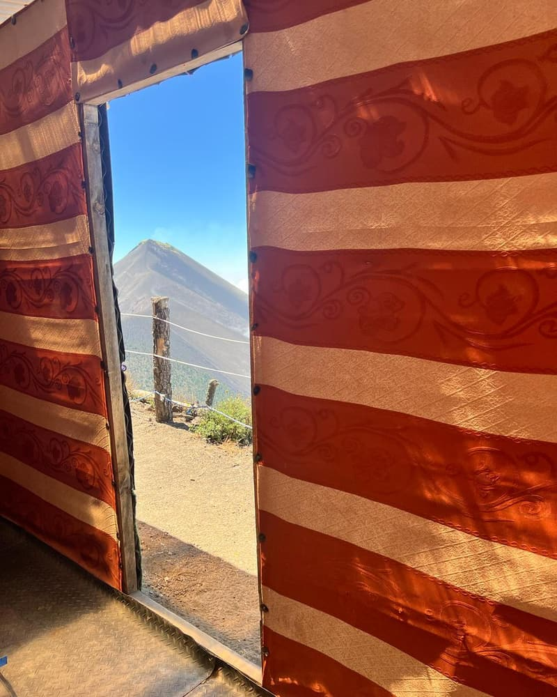
La vista desde tu puerta
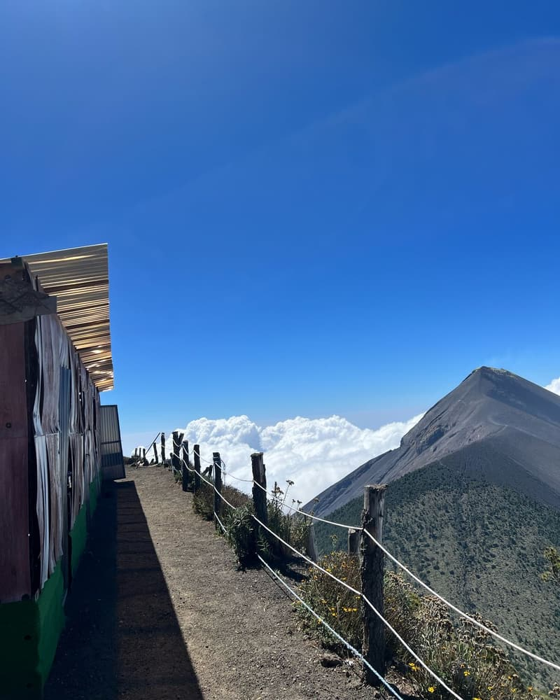
La fila de cabañas, frente al Fuego
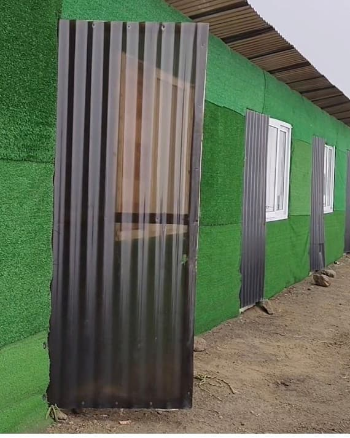
Cabañas en el campamento
Desliza para ver más
Nuestros otros tours
Otras formas de subir al Acatenango.
Tour de medianoche
Sale de Antigua a las 10:30 p. m. · Q750 · ≈ US$100
Camina bajo las estrellas para llegar a la cima justo al amanecer.
Incluye: transporte, guía local, 1 tiempo de comida, guantes y gorro, entrada.
8:00 a. m.Recogida en Antigua En tu café (desde las 6:30 a. m., a solicitud).
Cerca de 1 horaEn carro a La Soledad La entrada principal al Acatenango.
9:00 a. m. · Inicio del senderoLa casa de Alexander Baño, indicaciones, alquiler de equipo y conoces a tu guía. Tu equipaje queda guardado y seguro en la casa de Alexander mientras caminas.
Día 2De bajada Recoges tu equipaje y regresas al mismo café, o sigues hacia Panajachel, a solicitud.
¿Sigues hacia el Lago de Atitlán?
Seguir hacia Panajachel / Lago de Atitlán es un extra opcional, a solicitud. Al regreso no tienes que entrar hasta Antigua, y eso te puede ahorrar hasta 90 minutos. Pregúntale a Alexander cuando reserves.
Viaja ligero
No inviertas en equipo que usarás una sola vez.
Puedes alquilar equipo y contratar porteadores, a solicitud; no están incluidos en el precio del tour. Alquila lo que te falte en casa de Alexander antes de salir: pregunta los precios cuando reserves y tendremos tu equipo listo.
Porteador, a solicitud (no incluido): carga hasta 13 kg por ti, Q250 de subida,Q250 de bajada.
Recogida a las 8:00 a. m. (desde las 6:30 a. m., a solicitud) en Café Condesa (Parque Central) o Café La Parada (Parque La Merced), en Antigua. Confirma la hora y el lugar exactos con Alexander por WhatsApp.
¿Cómo reservo?
Toca “Consulta tu fecha por WhatsApp”, llena lo que sepas y envía el mensaje. Alexander te responde personalmente y confirma tu lugar. En esta página no se reserva ni se cobra nada.
¿Cómo pago?
El pago es en efectivo: fácil y sin comisiones de tarjeta. Alexander te da los detalles cuando confirma tu lugar.
¿Los guías hablan inglés?
Hablan sobre todo español y un poco de inglés. Son de la zona, amables y muy divertidos, y su trabajo es que te vayas feliz.
¿Veremos erupciones del Fuego?
Desde nuestro campamento el Fuego queda justo enfrente, así que en las noches despejadas puedes ver erupciones pequeñas y también grandes. Pero eso lo deciden las nubes y el volcán; nadie puede prometer el espectáculo.
¿Tendremos una cabaña privada?
Las cabañas son compartidas, para seis personas. A solicitud, y si hay poca gente en el campamento, puedes tener una cabaña solo para ti, tu pareja o tu grupo pequeño. Alexander te lo confirma cuando se acerque la fecha.
¿Y si está nublado?
Nadie controla el clima: para las vistas hace falta cielo despejado, y las nubes van y vienen.
¿Puedo dejar mi maleta?
Sí. Tráela en el transporte: tu equipaje queda guardado y seguro en la casa de Alexander mientras caminas. Lleva contigo tu pasaporte, tu dinero y tu teléfono.
¿Qué tan difícil es la caminata?
Es una subida empinada y en altura, hasta la cima a 3,976 m. Caminas al ritmo de tu grupo, de 2 a 8 personas por guía, así que nadie va apurado. ¿Tienes dudas? Pregúntale a Alexander por WhatsApp antes de reservar.
¿Qué debo llevar?
4 litros de agua por persona
Ropa de abrigo para noches de −2 °C a +5 °C
Gorro y guantes
Una linterna frontal
Buenos zapatos
Tu pasaporte (lo revisan en la entrada del parque)
Efectivo
Lo que te falte lo puedes alquilar en la casa de Alexander, a solicitud.
¿Puedo seguir directo al Lago de Atitlán?
Sí: seguir hacia Panajachel / Lago de Atitlán es un extra opcional, a solicitud. No tienes que regresar hasta Antigua, y eso te puede ahorrar hasta 90 minutos. Elige “Seguir hacia Panajachel” en el formulario o pregúntale a Alexander por WhatsApp cuando reserves.
¿Podemos acercarnos más al Fuego?
Sí, con la caminata opcional al Fuego: desde el campamento hacia el volcán activo y de vuelta al mismo campamento a dormir. Unas 4 horas: 2 horas de ida, unos 30 minutos allá arriba y 2 horas de regreso. Cuesta Q300 por persona; se decide y se paga en el campamento, así que no hay que pagar nada por adelantado. Tu guía te aconsejará, por su experiencia y por cómo lee el clima de la montaña, si vale la pena ir hacia la cima del Fuego. ¡Con un poco de suerte el cielo estará despejado y la vista de las erupciones de lava será espectacular!
¿En qué idioma puedo escribir?
En español o en inglés: escríbele a Alexander por WhatsApp.
Reserva
Escríbele un mensaje a Alexander.
Llena lo que sepas. Lo convertimos en un mensaje de WhatsApp que puedes editar antes de enviarlo. Nada queda reservado hasta que Alexander confirme.